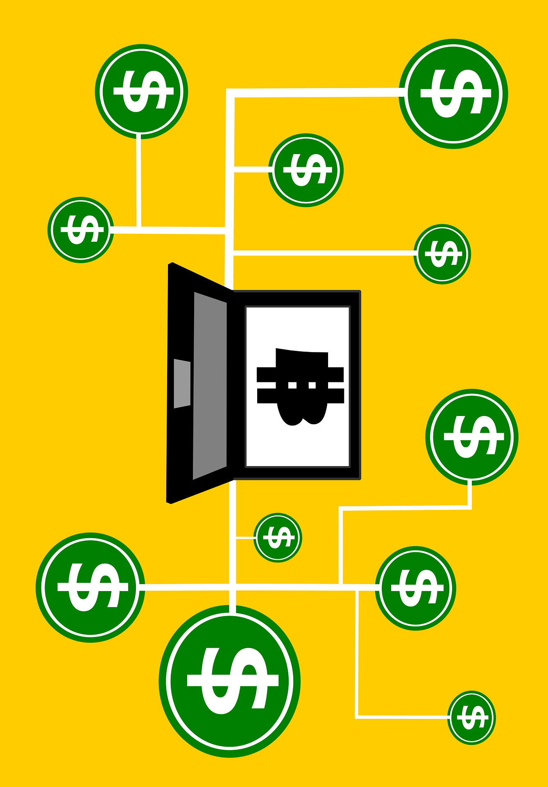

at (current page.center) ;
University of Victoria
Faculty of Engineering
ENGR 446: Milestone Report I: Project Background
David Li Computer Engineering V00818631
In partial fulfillment of the academic requirements of this academic course
In 2008 bitcoin white paper [1] described a way to solve the double spending problem without a centralized body using blockchain. Although, the value of bitcoin (BTC) has grown exponentially, high computational and energy consumption in mining and slow performance [2]. Released in July 30, 2015, Ethereum, an open-source platform based on blockchain technology, distinguishes itself from bitcoin through faster transactions, unlimited processing capability for smart contract, and its network is optimized to support Decentralized Applications [3].
| 2008 | Bitcoin White Paper |
| 2009 | Bitcoin Genesis Block |
| 2013 | 1 BTC = $ 31 USD |
| 2013 | Ethereum White Paper |
| 2015 | Ethereum Genesis Block |
| 2015 | HyperLedger starts |
| 2017 | Over 1000 different cryptocurrencies |
| 2018 | AWS Blockchain Templates |
Blockchain technology is revolutionizing the internet by establishing trust in shared data. [3]. Additionally, transactions recorded on the blockchain are practically impossible to remove or change. A decentralized application, or DApp are deployed on peer to peer networks such as Ethereum or on the cloud.
Traditional legal contracts are written to represent the contracting parties. In a smart contract, self-executing source code is used to automatic transactions that are publicly available on the blockchain [3].
Illustrating how a smart contract works
The prominence of cryptocurrency and decentralized applications suggests usage of smart contracts will experience explosive growth.
Currently commonplace transactions require days to process and for parties verify correctness. For example to purchase houses, a plethora of steps are required, one must interactive with lawyers, real-estate agents, home inspector, buy insurance and shop for a mortgage.
Leveraging existing blockchain technologies can automatic the majority of steps and cut out the middlemen, resulting in buyers conversing directing with sellers.
The aims of this project are to develop a decentralized blockchain system that:
Reduce cost of transactions by at least 50% from removing middlemen.
Improve transparency in software systems through augmented accessibility and understandability.
Has increased reliability and more secure than traditional systems.
The regulatory uncertainty and impact of future regulations on blockchain technologies such as smart contracts will not be investigated. In addition, criminal usage of cryptocurrencies to avoid taxation and legal repercussions are beyond the scope of this report.
Public blockchains are large distributed networks that are run through a native token such as bitcoin or ether. Anyone can participate and the community maintains its open-source code. The two largest public blockchains are Ethereum and Bitcoin. They are open for anyone to participate at any level and have open-source code that their community maintains.
Permissioned blockchains define role based access control for individuals in the network and uses native tokens. HyperLedger Composer, an open-source framework for permissioned blockchains, is used for smart contracts and for blockchain application development [4]. One use case is an accounting system that calculates payment, while hiding that information from unrelated organizations.
Architecture of Hyperledger composer
Private blockchains membership is tightly controlled and lacks a native token. Useful for consortiums with trusted associates and exchanging confidential information, however, less powerful because it is supported by limited private resources. Large organizations such as governments will likely use these extensively.
Determining which platform is best for smart contracts should be done using a weighted decision matrix, based on the particular application. For internal processes such as supply chains, a private blockchain makes sense (data cannot be changed) and cryptographic auditing with known identities (public keys). For a trustless system that verifies every transaction, using a public blockchain is essential. In comparison, role-based access control is feasible by using a permissioned blockchain. Despite the slow speed of the public blockchain, innovations such as side chains enable quick transactions and are used in decentralized game development [5]. A permissioned blockchain allows role based access control which is essential in business applications. One example is to prevent unrelated parties from viewing other’s data. Furthermore, smart contracts allow buyers and sellers exchange money, property, shares, or anything of value in a transparent, conflict-free way while avoiding the services of a middleman. This allows validation of complex transactions swiftly while maintaining transparency.
| speed and latency | 5 | 7 | 7 | 6 |
| scalability | 5 | 9 8 | 7 | 4 |
| security and immutability | 3 | 7 | 8.5 | 9 |
| storage capacity | 4 | 9 | 9 | 6 |
| transparency | 3 | 9 | 7 | 5 |
| 21 | 41.6 | 38.5 | 30 |
A decentralized system (peer to peer) has many advantages over a conventional centralized network including no single points of failure, cheaper distribution (servers are expensive), faster upload speeds and improved security. In addition, irreversible and immutable transactions are both an advantage and disadvantage. For example, an amateur coder killed the contract that allowed users to transfer Ether for the Parity Ethereum Wallet, rendering 150 to 300 million dollars completely useless [6]. Overall, the public blockchain with access to substantial collective resources is most viable in terms of scalability and transparency, however, institutes may prefer implementing permissioned or private blockchains internally for extended security and privacy.
[1] "Bitcoin white paper." https://bitcoin.org/bitcoin.pdf.
[2] S. Elnaj, "The problems with bitcoin and the future of blockchain." https://www.forbes.com/sites/forbestechcouncil/2018/03/29/the-problems-with-bitcoin-and-the-future-of-blockchain.
[3] "Ethereum white paper." https://github.com/ethereum/wiki/wiki/White-Paper.
[4] "Hyperledger composer overview." https://www.hyperledger.org/wp-content/uploads/2017/05/Hyperledger-Composer-Overview.pdf.
[5] A. B. M. Corallo, "Loom network sdk for developers." https://medium.com/loom-network/loom-sdk-for-developers-using-an-indexing-layer-for-lightning-fast-dapp-performance-b17f8ba25a3c.
[6] T. Maas, "Yes, this kid really just deleted 300 million by messing around with ethereum’s smart contracts." https://hackernoon.com/yes-this-kid-really-just-deleted-150-million-dollar-by-messing-around-with-ethereums-smart-2d6bb6750bb9.